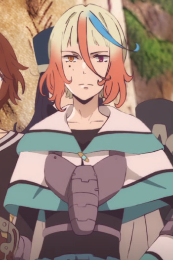

|
Hans Obermayer |
|
Hans Obermayer is the leader of Eylstadt's Schweizen Forrtess garrison. He is alos a part of Fine's inner circle. |
 |
Kazuki Ichijo |
|
Kazuki Ichijo is Miki's older brother and live with his father. He poses as Miki's boyfriend so that other boys will no flirt with her. He is sickly but encourages him. He wants to be doctor. Kazuki is more confident and braver. |
|  |
Rochalizo Anastenagmos Neie Imisukin Emarika Antipatros |
- Children of the Whales
- Children of the Whales Specials
|
Rochalizo Anastenagmos Neie Imisukin Emarika Antipatros or Rochalizo is the fourth son of Duke Amonlogia, King of Suidelasia. He has a flashy and haughty attitude. |
 |
Ronald Knox |
- Black Butler 2
- Black Butler 2 Specials
- Black Butler: Book of Circus
- Black Butler: Book of the Altantic
|
Ronald Knox is a shinigami sent to work with William Spears as extra personnel. He is laid back, easy-going Shinigami. He finds ways to accomplish his job quickly. He interested in partying. |